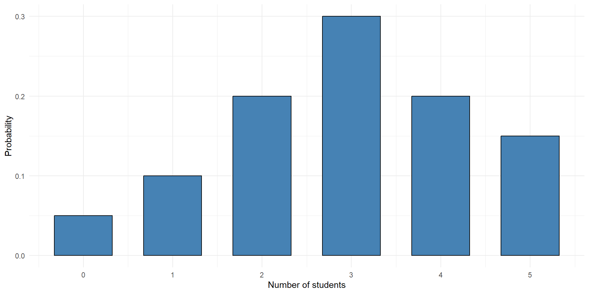
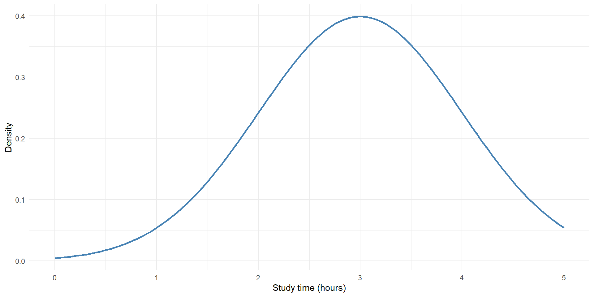
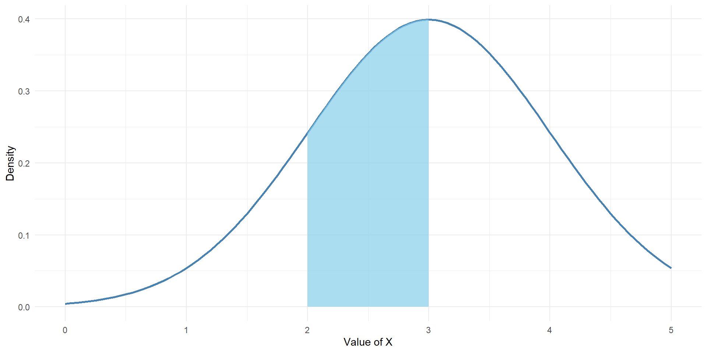
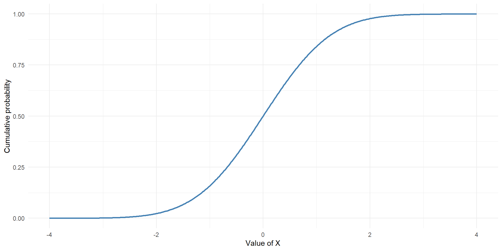
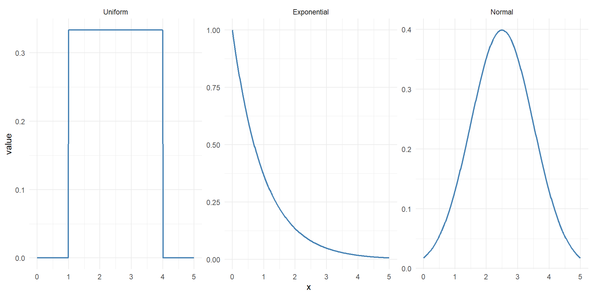
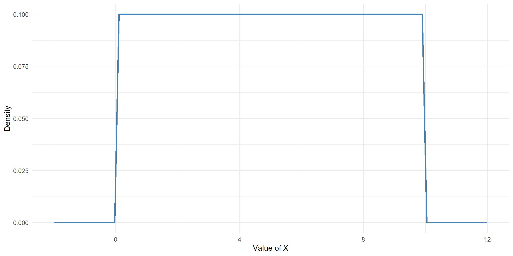
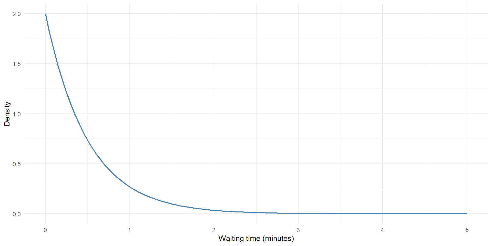
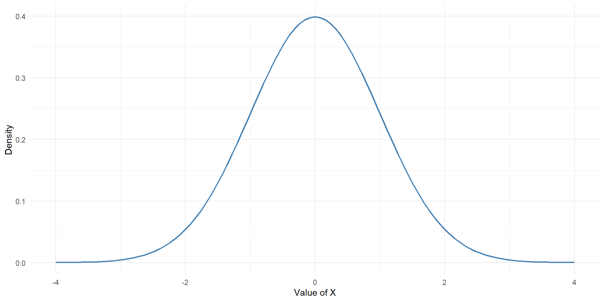
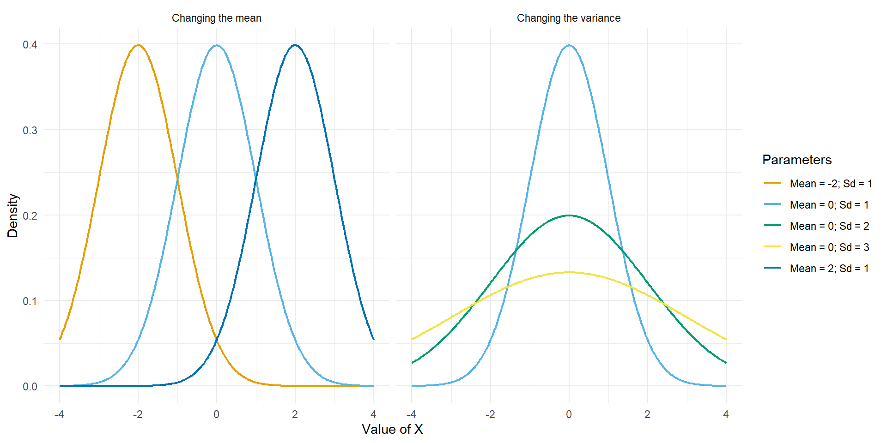
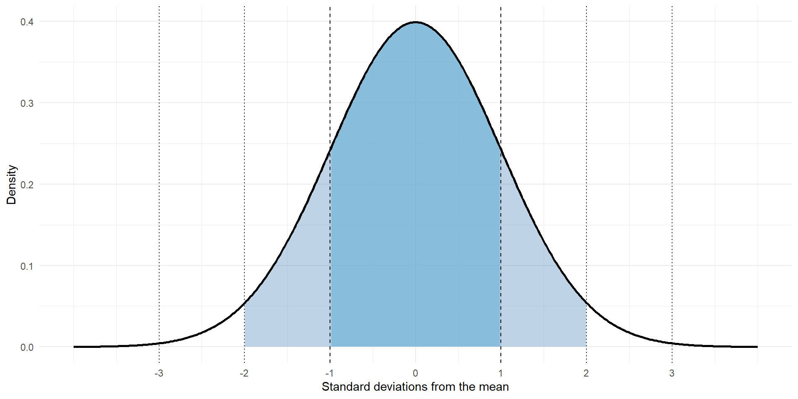

ST201 - Data analysis
A continuous random variable can take any value within a specified interval.
Unlike a discrete random variable, which takes countable values, a continuous random variable can take infinitely many possible values.
A person’s height might be 175 cm, 175.2 cm, 175.23 cm, or any other value within the possible range.
Discrete random variable
How many students are attending a lecture?
\[ 0, 1, 2, \dots, \infty \]

Continuous random variable
How long does a student spend studying?
\[ 2, 2.1, 2.11, \dots, \infty \]

A continuous probability distribution is described using a probability density function (PDF).
We write the PDF as: \(f(x)\)
The PDF describes the relative density of probability across possible values of a continuous random variable.
Unlike a discrete probability distribution, the height of the curve does not directly represent the probability of an individual value.
Probability is represented by the area under the curve.
A valid probability density function has two important properties
\[ f(x) \geq 0 \quad \text{and} \quad \int_{-\infty}^{\infty}f(x),dx = 1 \]
Suppose we want to calculate the probability that a continuous random variable falls between two values, \((a)\) and \((b)\)
\[ P(a < X < b) = \int_a^b f(x),dx \]
This is the area under the density curve between \((a)\) and \((b)\)

Probability at a single point
For a continuous random variable:
\[ P(X = x) = 0 \]
This does not mean that observing a particular value is impossible.
It means that the probability of observing one exact value, with infinitely many possible values across a continuous range, is zero.
\[ P(X = 175) = 0 \quad \text{but} \quad P(174.5 < X < 175.5) > 0 \]
The cumulative distribution function, or CDF, gives the probability that a random variable takes a value less than or equal to a specified value.
We write this as:
\[ F(x) = P(X \leq x) \]
For a continuous random variable:
\[ F(x) = \int_{-\infty}^{x}f(u),du \]
In other words, the CDF represents the accumulated area under the PDF up to a particular value.

| CDF | |
|---|---|
| Describes probability density | Describes cumulative probability |
| Writen as f(x) | Written as F(x) |
| Probability is an area under the curve | Probability is the accumulated area |
| Total area equals 1 | Values range from 0 to 1 |
For a continuous random variable:
\[ P(a < X < b) = F(b) - F(a) \]
The expected value describes the long-run average value of a continuous random variable.
For a continuous random variable:
\[ E(X) = \int_{-\infty}^{\infty}xf(x),dx \]
This is the continuous equivalent of the expected value formula for discrete random variables.
The variance describes the spread of a continuous random variable around its expected value.
\[ \operatorname{Var}(X)=E(X^2)-[E(X)]^2 \]
with a standard deviation of
\[ SD(X)=\sqrt{\operatorname{Var}(X)} \]
We will focus on three commonly used continuous probability distributions:

A uniform distribution describes a random variable where every value within a specified interval has the same probability density.
Suppose we randomly select a number between \(a\) and \(b\).
We write:
\[ X \sim \operatorname{Uniform}(a,b) \]
The distribution is constant between \(a\) and \(b\), and zero outside this interval.
For example, if a number is selected randomly between 0 and 10, all intervals of equal length have equal probability.
Probability density function
\[ f(x)= \begin{cases} \frac{1}{b-a}, & a\leq x \leq b\\ 0, & \text{otherwise} \end{cases} \]
Cumulative distribution function
\[ F(x)= \begin{cases} 0, & x<a \\ \frac{x-a}{b-a}, & a\leq x\leq b \\ 1, & x>b \end{cases} \]
Expected value
\[ E(X)=\frac{a+b}{2} \]
Variance
\[ \operatorname{Var}(X)=\frac{(b-a)^2}{12} \]

The net weight of a package is uniformly distributed between 980 g and 1030 g.
\[ X \sim \operatorname{Uniform}(980,1030) \]
We can ask and answer the following questions:
RThe expected weight is:
\[ E(X)=\frac{980+1030}{2}=1005\text{ g} \]
The probability that a package weighs less than 1000 g is:
The probability that a package weighs between 990 g and 1010 g is:
The 75th percentile is:
The exponential distribution is commonly used to model the waiting time until an event occurs.
Examples include:
Suppose events occur at an average rate of \(\lambda\) events per unit of time.
The waiting time until the next event can be modelled as:
\[ X\sim\operatorname{Exponential}(\lambda) \]
For example, if a website receives an average of \(\lambda = 10\) visits per second:
The expected waiting time between visits is:
\[ E(X) = \frac{1}{\lambda} = \frac{1}{10} = 0.1 \text{ seconds} \]
A higher event rate means a shorter expected waiting time.
Probability density function
\[ f(x)=\lambda e^{-\lambda x}, \qquad x\geq0 \]
Cumulative density function
\[ F(x) = 1-e^{-\lambda x} \]
Expected value
\[ E(X)=\frac{1}{\lambda} \]
Variance
\[ \operatorname{Var}(X)=\frac{1}{\lambda^2} \]

A search engine receives an average of 10 visits per second.
Assume that visits occur according to a Poisson process.
Let \(X\) represent the waiting time until the next visit.
\[ X\sim\operatorname{Exponential}(10) \]
We can ask and answer the following questions:
RThe expected waiting time is:
\[ E(X)=\frac{1}{10}=0.1\text{ seconds} \]
The probability that the next visit occurs within 0.6 seconds is:
The probability that the waiting time is between 0.05 and 0.2 seconds is:
The 80th percentile is:
The normal distribution is one of the most commonly used probability distributions in statistics.
It is often used to describe continuous measurements such as:
The normal distribution is characterised by its familiar bell-shaped curve.
A normal distribution has two parameters:
\[ X \sim \mathcal{N}(\mu,\sigma^2) \]
As an example
\[ X\sim \mathcal{N}(100,15^2) \]
describes a normal distribution with:
Probability density function
\[ f(x)= \frac{1}{\sqrt{2\pi\sigma^2}} e^{-\frac{(x-\mu)^2}{2\sigma^2}} \]
Expected value
\[ E[X] = \mu \]
Variance
\[ \operatorname{Var}(X) = \sigma^2 \]


The normal distribution has several important properties:
These properties make the normal distribution particularly useful for statistical modelling.
For a normal distribution, approximately:
\[ \begin{aligned} P(\mu-\sigma<X<\mu+\sigma) &\approx 0.68 \\[4pt] P(\mu-2\sigma<X<\mu+2\sigma) &\approx 0.95 \\[4pt] P(\mu-3\sigma<X<\mu+3\sigma) &\approx 0.997 \end{aligned} \]

The weights of the boxes are assumed to be normally distributed, with:
\[ \mu=15\text{ kg} \quad \text{and} \quad \sigma^2=2.25\text{ kg}^2 \]
Therefore:
\[ X \sim \mathcal{N}(15,2.25) \]
We can ask and answer the following questions:
RThe probability that a box weighs less than 13 kg is:
The probability that a box weighs between 12 and 14 kg is:
The 68th percentile is:
| Distribution | What does it model | Parameters |
|---|---|---|
| Uniform | Values with constant density over an interval | Minimum, maximum |
| Exponential | Waiting time until an event | Rate |
| Normal | Symmetric, bell-shaped measurements | Mean & Standard deviation |
The most important step is to understand what the random variable represents.
| Feature | Discrete | Continuous |
|---|---|---|
| Possible values | Countable | Infinitely many within an interval |
| Probability | Assigned to individual values | Calculated over intervals |
| Probability function | PMF | |
| Cumulative probability | CDF | CDF |
| Total probability | Sum = 1 | Area = 1 |
| Example | Number of calls | Time between calls |